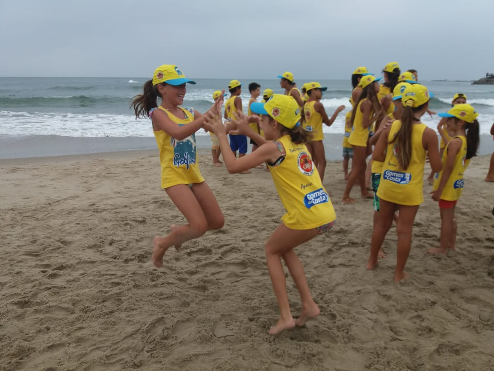

Ary e Ofélia estavam em um casamento de um primo de Ofélia quando se conheceram. Alisson e Amanda se conheceram no Colégio em que estudavam, Champanhang.
Todos os netos de Ary e Ofélia participaram do projeto golfinho em SC, um projeto em que os docentes são os bombeiros e guarda-vidas que ensinam tudo sobre a praia, os riscos, os salvamentos e principalmente os cuidados que tem que ter.
Apenas Lívia e seus pais moram no Paraná, os outros da família moram em SC